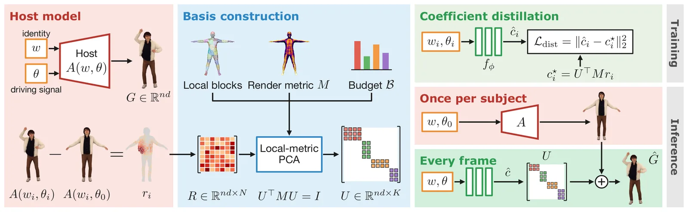
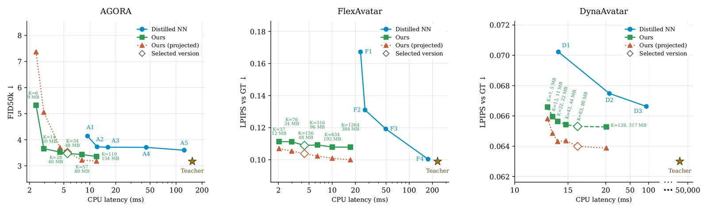
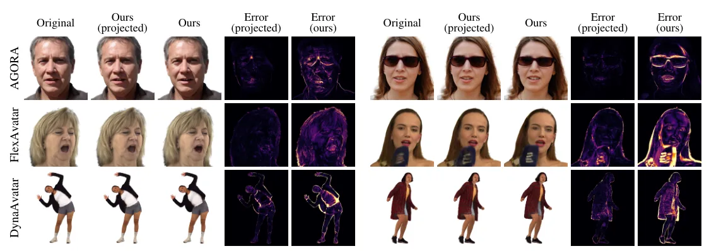

O problema: avatares Gaussian renderizam rápido, mas animam devagar
Avatares baseados em 3D Gaussians—primitivas explícitas que podem ser renderizadas por splatting diferenciável—tornaram-se populares porque combinam qualidade fotorrealística com rendering eficiente. Modelos recentes conseguem gerar cabeças, reconstruir rostos a partir de uma única imagem ou animar corpos completos com dinâmica de roupas. Mas há um gargalo: a animação em si.
A cada frame, esses modelos executam uma rede neural substancial para atualizar os atributos dos Gaussians—posição, escala, rotação, opacidade, aparência—a partir de parâmetros de expressão facial ou pose corporal. Essa inferência neural, que os autores chamam de caminho de animação, domina o custo computacional e inviabiliza execução em CPUs ou dispositivos móveis, mesmo quando o rendering em GPU é rápido.
A pergunta que motiva este trabalho é: quanta dessa computação é realmente necessária? A complexidade do decoder não linear não implica que as saídas dele precisem de uma representação igualmente complexa. Talvez exista uma estrutura linear compartilhada entre identidades, mesmo que a arquitetura e o objetivo de treinamento não a imponham explicitamente.
A descoberta: modelos treinados escondem blendshapes compartilhadas
Os autores mostram que as saídas de animação de diversos modelos de avatar Gaussian pré-treinados podem ser aproximadas de perto por um avatar neutro específico da identidade mais uma combinação linear de blendshapes independentes de identidade. Essas blendshapes são obtidas analisando resíduos dos atributos dos Gaussians em relação ao estado neutro, coletados através de múltiplas identidades e sinais de controle.
O ponto crucial é que uma base extraída uma vez do modelo também captura a animação de identidades excluídas da construção da base. A dependência de identidade fica retida nos coeficientes das blendshapes, enquanto a base de deformação é compartilhada. Isso difere de trabalhos anteriores: métodos como os de Zielonka et al. (2025) ajustam blendshapes Gaussian por sujeito; sistemas como LAM (He et al., 2025) adotam um rig de animação predefinido. Aqui, a base é extraída de um modelo treinado que representa muitas identidades e pode ser reutilizada para novos sujeitos sem reconstrução.

GALA: destilação de blendshapes Gaussian
A partir dessa descoberta, os autores propõem GALA (Gaussian Animation via Linear Approximation), um método de destilação que substitui a decodificação neural pesada por frame por um preditor raso de coeficientes e uma combinação linear. O modelo original A(w, θ), que mapeia identidade w e parâmetros de animação θ para atributos de n Gaussians, é aproximado por  = A(w, θ₀) + Uc(w, θ), onde θ₀ é a pose neutra, U é a base de blendshapes e c são os coeficientes.
A construção da base começa com PCA não-centrada: para um grande conjunto de N amostras (wᵢ, θᵢ), calculam-se resíduos rᵢ = A(wᵢ, θᵢ) − A(wᵢ, θ₀) e empilham-se como colunas de uma matriz R. A decomposição em valores singulares truncada de R fornece a base U de rank K cujas colunas são os K primeiros vetores singulares à esquerda. Como os resíduos são medidos em relação ao avatar neutro de cada identidade e não há offset de média adicional, coeficientes zero recuperam exatamente o avatar neutro.
Mas essa construção simples tem três limitações: grupos de atributos têm unidades e escalas diferentes; componentes globais incorrem em custo de armazenamento mesmo para deformações localizadas; e erro euclidiano de atributos não reflete diretamente qualidade de rendering. GALA endereça cada uma delas.
Melhorias: decomposição local, métrica de rendering e orçamento de memória
Primeiro, os autores separam atributos em grupos—posição, escala, rotação, opacidade, aparência—e constroem uma base separada para cada um, evitando acoplamento de escalas diferentes e permitindo taxas de compressão distintas. Segundo, particionam espacialmente os Gaussians em blocos (por exemplo, agrupando por região facial ou corporal) e aplicam PCA dentro de cada bloco, resultando em uma base bloco-diagonal que aloca componentes apenas onde há variação.
Terceiro, introduzem uma métrica de rendering-aware: em vez de minimizar erro euclidiano nos atributos, medem o impacto visual. Para cada resíduo rᵢ, renderizam a diferença de imagem causada por ele e computam LPIPS, uma métrica perceptual. A PCA é então ponderada por essa importância visual, priorizando deformações que afetam a aparência final.
Quarto, operam sob um orçamento de memória B: alocam componentes principais aos blocos e grupos de atributos de modo a maximizar a redução de erro de imagem por byte armazenado. Isso é feito de forma gulosa, adicionando iterativamente o componente que oferece maior ganho de qualidade por custo de memória até esgotar o orçamento. O resultado é uma base compacta, localmente adaptada e visualmente informada.
Preditor de coeficientes: uma rede rasa substitui o decoder pesado
Com a base U extraída, resta prever os coeficientes c(w, θ) a cada frame. Os autores treinam uma MLP rasa condicionada na identidade w e nos parâmetros de animação θ. Para modelos com condicionamento temporal, θ inclui o histórico de movimento necessário (por exemplo, DynaAvatar usa uma janela de 15 poses SMPL-X anteriores).
O treinamento usa supervisão do modelo original: geram-se pares (wᵢ, θᵢ) e computam-se os resíduos rᵢ do host model. Os coeficientes-alvo são c⋆ᵢ = Uᵀrᵢ, a projeção do resíduo na base. A rede aprende a mapear (w, θ) → c minimizando a distância entre c predito e c⋆. Uma vez treinada, a animação se resume a avaliar a MLP rasa e somar Uc ao avatar neutro—operações muito mais baratas que a inferência do modelo original.
Para FlexAvatar, que ajusta a representação de identidade w às imagens de entrada de cada sujeito de teste, GALA segue o mesmo protocolo: após extração da base no conjunto de treino, fine-tuna o preditor de coeficientes por sujeito nas saídas do host model, um enrollment leve que preserva a eficiência.

Três modelos, três tarefas: face GAN, reconstrução one-shot e corpo vestido
Os autores validam GALA em três host models com arquiteturas e tarefas distintas. AGORA (Fazylov et al., 2025) é um GAN 3D de cabeças que anima Gaussians canônicos com um branch convolucional de deformação condicionado em parâmetros de expressão e mandíbula do FLAME. FlexAvatar (Kirschstein et al., 2026) reconstrói uma cabeça a partir de uma única imagem e regenera todos os atributos dos Gaussians a cada frame com um decoder transformer condicionado em código de expressão derivado do FLAME.
DynaAvatar (Kwon et al., 2026) reconstrói um avatar de corpo completo com dinâmica de roupas a partir de uma única imagem e regenera os Gaussians a cada frame com um transformer dinâmico condicionado na pose SMPL-X atual e nas 15 poses anteriores. Essa diversidade—GAN generativo, reconstrução feed-forward de face, reconstrução feed-forward de corpo vestido—testa a generalidade da abordagem.
Os dados de treinamento para GALA são gerados executando os host models em amostras de suas entradas. Para AGORA, 10 mil identidades amostradas do espaço latente combinadas com 6 expressões; para FlexAvatar, 1.200 identidades de treino com 8 expressões cada; para DynaAvatar, frames amostrados das sequências de treino. Crucialmente, os resultados reportados são em identidades excluídas desses dados, demonstrando generalização.
Resultados: até 2659× mais rápido, qualidade preservada
A Tabela 2 do paper compara cada modelo destilado (+GALA) ao host model original e a baselines do benchmark de cada um. Para AGORA, GALA atinge FID 3.47 (host: 3.17), AED 0.705 (host: 0.682), mantendo ID 0.76 e APD 0.026 praticamente idênticos. A velocidade salta de 250 FPS (GPU, reportado no paper original) para 1.275 FPS em CPU—um ganho de ~5× em CPU, mas mais importante, viabiliza 60 FPS em celular (mFPS), algo impossível antes.
Para DynaAvatar, GALA obtém PSNR 23.22 (host: 23.86), SSIM 0.957 (host: 0.959), LPIPS 0.066 (host: 0.063), superando baselines como IDOL (PSNR 21.31) e PERSONA (19.46). A velocidade vai de 0.3 FPS (host) para 1.284 FPS—um speedup de ~4.280×—e também atinge 60 FPS em celular. Para FlexAvatar, PSNR cai de 25.69 para 25.17, mas o speedup é ~53× em CPU, e novamente 60 FPS em celular.
A Figura 4 compara GALA a alternativas de destilação—treinar uma rede menor diretamente ou usar destilação de conhecimento padrão—mostrando que GALA oferece melhor trade-off qualidade-velocidade. A Figura 3 mostra comparações qualitativas: GALA preserva detalhes de expressão facial e dinâmica de roupa de forma visualmente indistinguível do host model na maioria dos casos.

Ablations: cada componente importa
Os autores conduzem estudos de ablação para isolar a contribuição de cada melhoria. Substituir a métrica de rendering-aware por PCA euclidiana simples degrada PSNR em ~0.3 pontos para FlexAvatar e ~0.5 para DynaAvatar. Remover a decomposição por blocos espaciais—usando uma base global—aumenta o tamanho da base em ~40% sem ganho de qualidade, desperdiçando memória em componentes que não contribuem localmente.
Remover a separação por grupos de atributos acopla posição, rotação, escala e aparência em uma única PCA, o que leva a uma alocação ineficiente de componentes: atributos de escala maior dominam a variância, enquanto atributos de escala menor mas visualmente importantes (como aparência) recebem menos componentes. A combinação de todas as melhorias—local, por atributo, rendering-aware, com orçamento—é necessária para o desempenho final.
Os autores também variam o orçamento de memória B e o número de componentes K, mostrando que existe um ponto de saturação: adicionar mais componentes além de ~64 por bloco traz retornos decrescentes, enquanto orçamentos muito apertados degradam qualidade rapidamente. O orçamento final é escolhido para caber confortavelmente em memória de dispositivos móveis (~100 MB para a base completa).

Limitações e o que fica em aberto
GALA é um método de destilação: depende de um host model pré-treinado e não pode corrigir erros ou limitações desse modelo. Se o modelo original falha em capturar certa dinâmica de roupa ou expressão extrema, GALA herdará essa limitação. A aproximação linear também introduz uma pequena perda de qualidade—tipicamente ~0.5 PSNR—que pode ser perceptível em inspeção cuidadosa, embora os autores argumentem que a diferença é visualmente pequena na maioria dos frames.
A construção da base requer acesso ao modelo original e a um conjunto de amostras representativas de identidades e animações. Para modelos generativos como AGORA, isso é direto; para modelos de reconstrução, requer um conjunto de treino diverso. A base é compartilhada dentro de um modelo, mas não entre modelos: cada host model precisa de sua própria base, pois a correspondência de Gaussians e a estrutura de deformação são específicas da arquitetura.
O paper não explora animação de interações complexas—como contato entre mãos e objetos, ou colisões de roupa com geometria externa—onde a linearidade pode ser mais limitante. Também não investiga composição de múltiplos avatares em uma cena, onde a eficiência de GALA poderia ser ainda mais vantajosa. Finalmente, o método assume que o host model mantém correspondência de índices de Gaussians entre identidades; modelos que não seguem essa convenção precisariam de adaptação.
Por que isso importa
GALA demonstra que modelos neurais de avatar, mesmo complexos e não-lineares, aprendem representações que admitem aproximação linear eficaz. Isso tem implicações teóricas—sugere que a estrutura de deformação compartilhada entre identidades é uma propriedade emergente do treinamento, não apenas um viés arquitetural—e práticas: viabiliza animação de avatares fotorrealísticos em dispositivos com recursos limitados.
A capacidade de destilar blendshapes de um modelo treinado, sem retreiná-lo e sem ajustar bases por sujeito, abre caminho para deployment em larga escala de avatares de alta qualidade. Aplicações em videoconferência, jogos mobile, AR/VR e assistentes virtuais se beneficiam diretamente: o custo de animação deixa de ser o gargalo, e a mesma base pode ser reutilizada para milhares de usuários.
O trabalho também sugere uma direção de pesquisa: investigar explicitamente estruturas lineares durante o treinamento de avatares, em vez de descobri-las post-hoc. Arquiteturas que incorporam blendshapes desde o início poderiam combinar a eficiência de GALA com a flexibilidade de modelos neurais, potencialmente superando ambos.
O que fica
- GALA extrai blendshapes compartilhadas de modelos de avatar Gaussian treinados, substituindo inferência neural pesada por combinação linear e acelerando animação em até 2659× em CPU.
- A base é construída por PCA local, rendering-aware e sob orçamento de memória, priorizando deformações que afetam a imagem final e alocando componentes onde há variação visual.
- Validado em três modelos distintos (face GAN, reconstrução one-shot de cabeça e corpo vestido), GALA preserva qualidade (queda típica de ~0.5 PSNR) e atinge 60 fps em celular.
- A descoberta central: avatares neurais aprendem estrutura linear emergente entre identidades, mesmo sem viés arquitetural explícito, permitindo destilação eficaz sem retreinar o modelo original.
Paper original: One Basis to Animate Them All: Gaussian Blendshape Distillation for Real-Time Avatars
Comentários
Nenhum comentário ainda. Seja o primeiro.